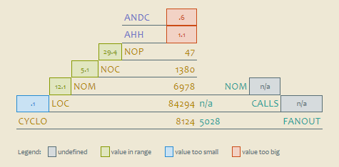

risorse | pyramid/cccc
Poiché l'Overview Pyramid generata a partire dalle metriche prodotte da SourceMonitor manca di alcuni parametri (cfr. Overview Pyramid con SourceMonitor), ho provato a verificare cosa si riesce ad ottenere con CCCC.
L'implementazione è simile a quella realizzata per SourceMonitor: uno script da linea di comando si occupa di prima di lanciare CCCC, quindi di avviare uno script Python che produce esattamente lo stesso file XML prodotto a partire dai file CSV di SourceMonitor, così da riutilizzare la trasformazione XSLT e il foglio di stile già disponibili.
Salta subito agli occhi una notevole discrepanza delle stime delle metriche estratte dai due strumenti, in particolare nei valori attribuiti a LOC e CYCLO:
| Metrica | SourceMonitor | CCCC | differenza (%) |
|---|---|---|---|
| ANDC | n/a | .6 | n/a |
| AHH | n/a | 1.1 | n/a |
| NOP | 49 | 47 | 4,1 |
| NOC | 1500 | 1380 | 8,0 |
| NOM | 7215 | 6978 | 3,3 |
| LOC | 186465 | 84294 | 54,8 |
| CYCLO | 14007 | 8124 | 42,0 |
| CALLS | 34708 | n/a | n/a |
| FANOUT | n/a | 5028 | n/a |
Confrontando i conteggi dei due strumenti con un terzo (CLOC, nella fattispecie), si conclude che il LOC di SourceMonitor è il Physical SLOC[1], mentre la stima di CCCC è più prossima al numero di linee non vuote, tenendo conto che CCCC ignora quelle contenenti delle direttive per il preprocessore:
| Tool | Versione | Vuote | Commenti | Codice | Istruzioni | Non Vuote | Totale |
|---|---|---|---|---|---|---|---|
| CLOC | 1.60 | 48695 | 11198 | 126572 | n/a | 137770 | 186465 |
| CCCC | 3.1.4 | n/a | 15194 | 101529 | n/a | n/a | 116723 |
| SourceMonitor | 3.4.6.301 | n/a | n/a | 186465 | 33669 | n/a | 186465 |
SourceMonitor:
Lines Metric: the number of physical lines in a source file, or for a checkpoint the total number of lines in all files in the checkpoint.
CCCC:
[...] Preprocessor lines are treated as blank.
È possibile inibire il conteggio delle linee vuote in SourceMonitor aggiungendo il seguente comando nel file batch di progetto:
<modified_complexity>true</modified_complexity> <ignore_blank_lines>true</ignore_blank_lines> <source_directory>...</source_directory>
Il conteggio in questo caso scende da 186465 a 137768, valore molto prossimo quello fornito da CLOC (137770), ma comunque piuttosto distante dalla stima di CCCC (116723, pari a uno scostamento del 37,4%).
Le discrepanze su questa metrica si spiega per la differente metodologia di calcolo: SourceMonitor, rispetto a CCCC, conta anche le uscite anticipate dai blocchi switch, oltre alle istruzioni catch.
SourceMonitor:
Each function or method has a complexity of one plus one for each branch statement such as if, else, for, foreach, or while. Arithmetic if statements (MyBoolean ? ValueIfTrue : ValueIfFalse) each add one count to the complexity total. A complexity count is added for each '&&' and '||' in the logic within if, for, while or similar logic statements. Switch statements add complexity counts for each exit from a case (due to a break, goto, return, throw, continue, or similar statement), and one count is added for a default case even if one is not present. (Note: when a project's Modified Complexity option is selected, switch statements add a count of one to the complexity and the internal case statements do not contribute to the complexity metric.) Each catch or except statement in a try block (but not the try or finally statements) each add one count to the complexity as well.
CCCC:
In the case of C++, the count is incremented for each of the following tokens: 'if','while','for','switch','break','&&','||'.
Aggiornamento [02/12/2013]
Lo script di creazione del prospetto ora vuole anche il nome e il numero di versione del progetto software da inserire nel titolo del prospetto:
Usage: pyramid.cmd <project-name> <project-version> <output-dir> <source-dir>+
Oltre all'indicazione dello strumento utilizzato per raccogliere le metriche, in testata ora viene riportata anche la data di creazione del prospetto stesso.
Pagina modificata il 28/11/2013